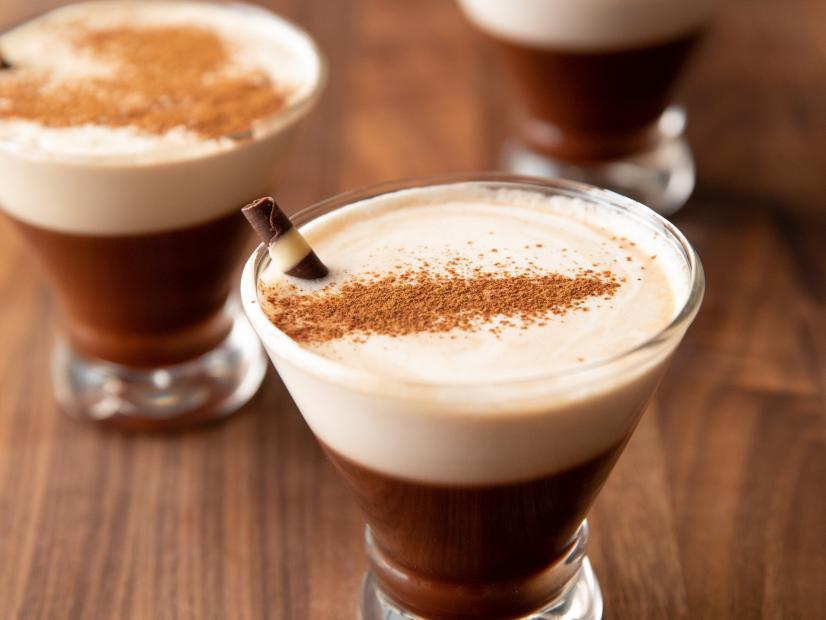

Naughty Cowgirl cocktail
Level:
Easy
Total:
5 min
Active:
5 min
Yield:
1 serving
Price:
R30
Ingredients
1 ounce espresso liqueur, such as Grind Espresso Shot Rum Liqueur
1 ounce cinnamon whiskey, such as Fireball
1/2 ounce chocolate syrup
1/2 ounce Mexican chile syrup
1 ounce Irish cream liqueur
1 ounce heavy cream
Dash cinnamon
1 chocolate cigar
Steps
Add the espresso liqueur, cinnamon whiskey, chocolate syrup and chile syrup to a shaker and add ice.
Shake until ice cold, for about 30 seconds, and pour into a martini glass.
Add the Irish cream liqueur and heavy cream to a new shaker, then add ice and shake for 20 seconds.
Pour this slowly on top of the drink so that the cream mixture floats on top.
Garnish with the cinnamon and chocolate cigar.
Place Order